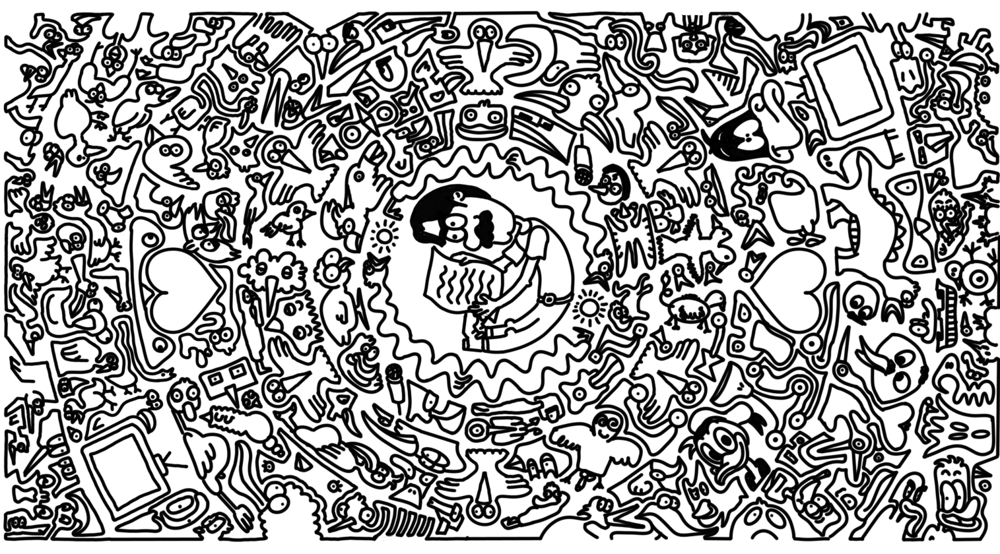
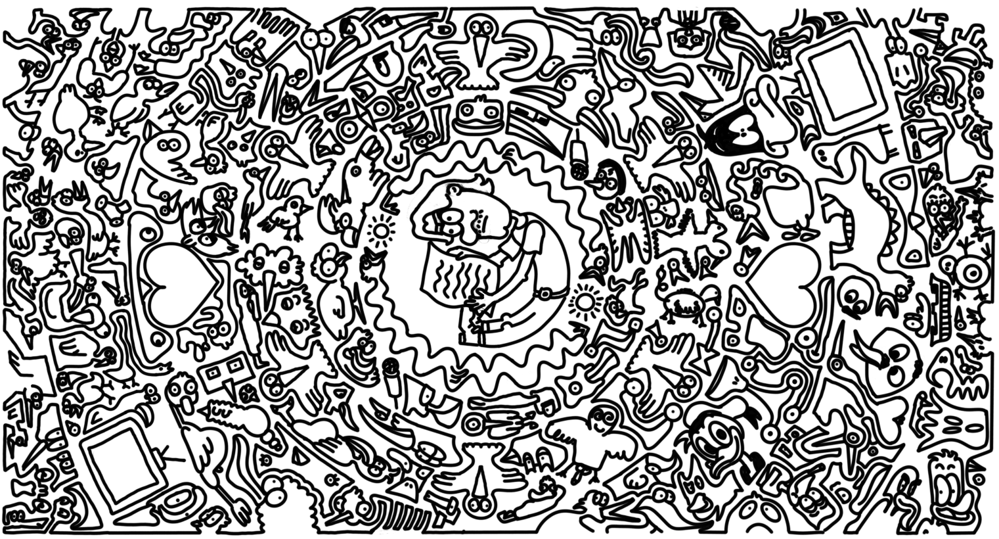

Il treno rosso arriva in stazione, rosso il vapore, rosso lo stridere dei freni e rossa la gente che ne entrava o ne usciva. |
The red train arrives at the station, red the steam, red the screeching of the brakes, and red the people entering or exiting. |
 |
 |
Mon regard se perd. Le vert des arbres. Les vélos qui passent comme les aiguilles de l'horloge. La vue des capuches des cyclistes entraine une prise de conscience; je dézoome. En effet, des larmes coulent aussi sur la fenêtre. Pluie et mélancolie... y a pas de quoi casser trois pattes à un canard. Bizarre expression, qui donnerait l'information juteuse à des extraterrestres que peu de canards ont trois pattes. Il faudrait bien que je sorte de cette mélancolie. Je zoome de nouveau. Retour au monde. Très, très lent. Je zoome sur un homme d'une cinquantaine d'années qui marche d'un pas décidé. Son horloge est plus rapide. Il donne un rythme different au monde de celui des vélos qui passent. Se rend-il compte que son aura, sa carrure, ses vêtements, son pas, son regard, son souffle écrivent les notes de la bande son du film de sa vie? Enfin seulement celui dont je suis réalisatrice... Et puis il ne m'intéresse pas le banquier, je préfère oublier son existence le plus vite possible. Elle justifie l'inexistence de ce lieu. Je m'invente un monsieur. Il est grand, les yeux rouges, dégingandé et obèse. Toc! Ça fera travailler l'imagination. Très confus, compréhensible vu son niveau de description, mon grand gros monsieur s'assied hébété sur un banc et regarde le canal. "Oh.. des bébés oies! " ..."s'écrie le monsieur " … dis-je en me grattant la gorge. Il était un sculpteur mais avant tout un marginal. Ayant accepté dès le plus jeune âge sa situation, il n'en avait toujours fait qu'à sa tête. Il était si habitué à attirer curiosités voire indignations que lorsqu'il faisait ses bizarreries habituelles, il ne se retournait même plus pour regarder les bébés oies, euh…, les badauds incrédules qui s'arrêtaient pour observer le spectacle. Il vivait de rien, certains jours faisait semblant d'être un bébé oie, euh…, ogre pour racketter un bébé oie, euh…, un bébé oie. Ces derniers bébés oies, il s'était trouvé une bébé oie pour la sculpture. Vous ne devinerez bébé oie ce sur bébé qu-oie il travaillait en ce bébé oie: hm hm .. un bébé oie. Couac. |
The green of the trees. The bicycles passing like clock hands. The sight of the cyclists’ hoods triggers a realization; I zoom out. Indeed, tears are also streaming down the window. Rain and melancholy... “y a pas de quoi casser trois pattes à un canard “ (““nothing like a three-legged duck””). Weird expression, really, one that would give aliens the juicy tidbit that few ducks have three legs. I really ought to snap out of this gloom. I zoom back in. Return to the world. Very, very slow. I focus on a man in his fifties walking with determined steps. His internal clock runs faster. He sets a different rhythm for the world than the passing bicycles. Does he realize his aura, his stature, his clothes, his stride, his gaze, his breath are all composing the soundtrack of his life’s movie? Or rather, just the one I’m directing… Anyway, the banker doesn’t interest me. I’d rather forget he exists as quickly as possible. His presence justifies the inexistence of this place. So I invent a man of my own. He’s tall, red-eyed, lanky, and obese. Bam! That’ll get the imagination going. Hopelessly confused, understandable, given how poorly I’ve described him. My big hulking man plops down dazed on a bench and stares at the canal. “Oh.. Baby geese!” ...“exclaims the man” ...I say, clearing my throat. He was a sculptor, but above all, an eccentric. Having accepted his oddity from a young age, he’d always done as he pleased. So accustomed to drawing curiosity, even outrage, he no longer bothered to turn his head when performing his usual antics—not even to glance at the baby geese, er... the baffled onlookers who stopped to watch the spectacle. He lived on next to nothing. Some days, he pretended to be a baby goose, er... an ogre, to shake down a baby goose, er... a baby goose. Eventually, he found his baby goose, for sculpting, that is. You’ll never baby guess what he was baby gworking on at that baby moment: Hm hm... a baby goose. Quack. |